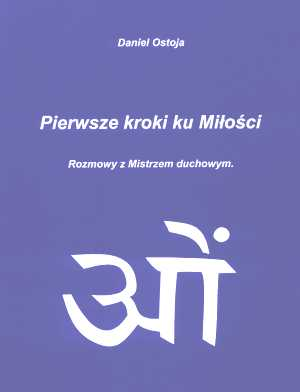
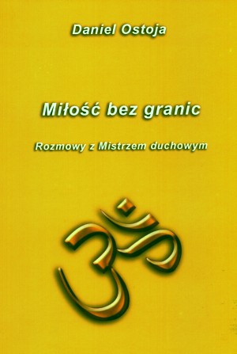
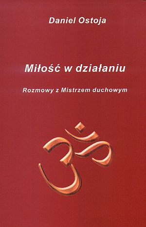

Important news!
A large portion (about 70%) of the first volume of the book (in Polish) is now
available here.
Its working version of
English translation
has been completed in October 2007.
Overviews of three important books by Daniel Ostoja
(see also Polish versions)
Dear Sai-Netters,
These days I have read a brand new Sai-book which
made such a great impression on me that I felt urge
to share something about it with all of you. Since it
is in Polish it will take some time until hopefully
all the world will be able to enjoy it fully.
The book is entitled "First Steps towards Love.
Conversations with a Spiritual Master" and is written by
Daniel Ostoja (pronounced as Ostoya).
The book very much resembles the famous "Conversations
with God" by Neale D. Walsch, however the God here is our
Swami Himself and the author is His devotee who after
intense sadhana obtained Grace of becoming a scribe of
His word. Although there is no mention about an outer,
physical blessing of the book by Swami, its content
carries such a power that to me there seem no need for
any wordly confirmation.
Mentioning Neale's books, it will be of interest to all
to note an indirect evidence that they are also
a 'product' of Swami (the understanding, that everything
is His making, aside), for Daniel in his conversations says
something like 'In Neale's books You state so and so' and
the Master accepts it matter-of-factly.

Okładka książki
The main theme of the book is Love. "This book will be
devoted to Love written by capital 'M', or Divine Love,
its working in the world and path of man to it.
This path consists of many stages and we shall discuss
them all in turn. Presently on Earth there are people of
all stages of evolution/development – from weakly formed
intellects to highly evolved spiritual Masters. The
latter have come down onto earth because of the end of
certain age and transition to another – the age of Truth,
in which God will be recognized as the Perpetrating Cause
of the Universe. [...]
In this book I shall tell how one can get to live with
God in close and full of joy friendship, how to find
in Him a trustee, companion and loving, devoted friend."
[page 46]
Many easy and appealing methods are given for people
who want to develop this Love and get indeed very close
to God. Here is one example of such a practice proposed:
"Concentrate on God considering Him as someone whom
you love dearly. Imagine that you approach Him and
embrace Him affectionately. This is the best way." [127]
Besides this dominating theme of Love a range of subjects
are considered at least on passing. A few examples that
caught my attention:
— Death and dying (crossing the tunnel, prayers for
departed, "Death is not the end, on the contrary, it
is beginning of life" [193]).
— Relationships ("In the eyes of God sacramental oath
loses validity in such cases like adultery, alcoholism,
sexual abuse, vilence" [81]).
— Abortion and euthanasia ("There are situations when
such a procedure/operation is a good solution," but
the decision always belongs to God, i.e. should be seeked
in Him. [135])
— The book will become known worldwide.
Q: Thousands of people will read Your words.
A: Hundreds of thousands all over the world. And
I shall touch everybody. Here. Now. [222]
— The next president (a prediction made on a lighter note).
Q: Master [Daniel usually calls the One behind the inner
voice by name of Master or Baba], who will be the next
president? Tell me and I shall stake a large sum of
money on him and win.
A: The same man as is now, but if you'll stake too
much, you will lose. Do not run the risk. [143]
[No more details are given. I assume the president in
question is that of USA, not Poland, for our president
already serves this position second and the last
tenure. Also, I assume this part of conversation took
place last year. Generally, however, no dates are
specified in the book.]
— About life being like a theatre drama that nears its completion.
A: ... But every performance must sometime end and
the present one is just about to finish. Love already
appears from behind the curtain of Heaven. Clapping
can be heard, simply stormy applause. It was exquisite
performance with deaply touching meaning. It remains
for Me only to thank you for taking part in the Play.
You did it superbly, simply superbly.
And in a moment for many of you will begin a new one.
Would you like to know its title?
Q: Oh, yes! Of course.
A: Divine Love Leads Waking-up Humanity Towards
Happiness and Light.
Q: Wonderful.
A: And how beautiful is the scenario ... Soon you will
find it yourselves. [83]
— Elsewhere:
Q: You know the future. Could You tell me, in what will all
this end.
A: Humanity will merge in Light.
Q: And will life on Earth survive?
A: No. Within a few billions of years the Sun will
envelope it with its radiation and this planet will
burn up.
Q: But will in the nearest hundred or two hundred years
not happen anything, which could threaten the humanity?
A: You will not get answer to this question. I have
already told enough. [62]
— Some more predicitions of our future.
Q: So, during the nearest 10 years the Earth will
be safe.
A: There are many dangers threatening, but luckily
I am here and I take care that nothing happens which
could impede your [plural 'your'] development. [64]
Present violent changes in the world are preparing
grounds for the coming new times. No such large scale
conflicts as before will be any more since many of
the responsible factors will simply cease to exist...
Even during your life you [singular 'you'] will see how
immense changes in men (this Avatar) will evoke. Never
more it will be the same humanity, believe me; it will
not be able to plunge itself for good in the dregs and
darkness. The light, that will flash within you, will
not allow for this. Course of events cannot be stopped
and their results are known. [232]
Soon this planet, as well as others, will be a planet of
love where men will live in spiritual unity with Creator
and He will be the everyday guide for them. Love will
shield every day and every step. Then also gates of
the other world will open and you [plural] will meet
your 'deceased.' No, they will not get up from graves;
you will simply see that they continue to live in a world
that exists just beside yours, and many of your ancestors,
near and familiar people, who have departed, came back
as your children, grandchildren, friends, neighbours.
These will be days of great discoveries and great joys
for all of you. There will not be any judgement except
understanding of laws and necessity of subjecting
oneself to them for our common good and happiness.
There will be no judgement, so also there will not be
any punishment, nor any hell. There will be love –
more and more of it. [215]
I hope Sai-Net members will appreciate my eagerness
to share these pieces from such an impressive book,
even though this post may not be entirely in accord
with this satsang (company of the good) rules.
Sent to Sai-Net discussion forum on Oct. 25, 2004
Edited for this posting on Nov. 4, 2005
And here is a freshly written and only slightly edited posting
(of Nov 7th, 2005) to the same Sai-Net forum
Dear Sai Family,
About a year ago I have posted here a review of a most amasing
book that appeared in Poland and apparently dictated by Sai
through an inner voice to His devotee by pen-name of Daniel
Ostoja. Then, I have expressed my sincere enthusiasm for
the book content and shared with you a few excerpts translated
from Polish (for those who have not read it I placed an edited
version at
http://sai.5v.pl/SSB/Inne/Ostoja-Sai-Net.htm
with a scan of the book cover).
Last month I have received ... guess what! Yes, a second book
by the same author and all throughout written in the same vein
and about the same matter: Love (meaning Love of God or just
God). Also, it carries the same subtitle ('Converasations with
a Spiritual Master'), but is differently entitled: 'Boundless
Love'.

Okładka książki
It is difficult to express the feelings of something great
happening that I felt while reading this second volume. It
must therefore be true that He has, as He Himself mentioned
in the book, blessed it with extra energy so that reading it
alone much influences the reader.
That first book, 'The First Steps towards Love', the Master
has now described as the most important book that was written
in this country (Poland) during the entire 20th century.
The third book of this series has been announced to appear.
So in this respect it will resemble still more the triple book
of 'Conversations with God' by N.D. Walsch, of which the Master
said it teaches knowledge or theory while the present writing
is devoted to Love. To me it sounded like ascribing the Neale's
series to well known to us notion of jnana-marga (path of
knowledge) and the Daniel's one to bhakti-marga (path of
devotion).
Here is an important excerpt that I decided to translate
sentence by sentence trying to be as precise as I can, for if
it is really that great as stated in the last paragraph cited
below, it would be pity to keep you awaiting for a full book
translation.
"If you want to meditate, sit down in solitude and ask
the Highest for help in this journey. Breath evenly for some
time, and then imagine the Universe as a huge ball in which
your planet is only a tiny dot.
Then, raise eyes still higher - look beyond the Universe
and see gigantic Sun effulgent with unheard-of brillance.
Envision that a blazing ray emanates from Him and touches
the top of your head. Pure and luminous brightness pervades
the entire head and, as if focused by a large lens, converges
in your heart. After a longer while let the Light flow from
the heart out to all nooks of your body, mind and soul. Let
this part of the practise continue for about ten to twenty
minutes. It may be accompanied by various phenomena, but
remain unconcerned regarding them as small gifts from someone
who loves you very, very much. This meditation is good prior
to retiring.
Meditate keeping in front of yourself imagined golden ball
of the Universe and behind it luminous Form of the Creator –
the pure, untainted Light unceasingly emitting Its rays in
all directions. Become One with Him.
Thanks to this meditation numerous Beings in the Great Cosmos
attained liberation. I pass it down to you [plural 'you']
on this planet for the first time. It is special boon of My
Love for all those who sincerely seek Love and wish to tread
Its paths." [Page 208/209]
There are quite a few examples of Daniel's dreams interpreted
by the Master. One of them seems to carry an unhappy prediction
for all of us. Daniel had a vision. When near to falling asleep
he saw Osama bin Laden and soon afterwards a nuclear mushroom
appeared. This time the Master refused to talk about it saying
that it is too early for him to understand many events happening
in the world. Daniel did not give up and later the conversation
went in part like this:
Q: There will be an explosion in a town.
A: Maybe.
Q: Hundreds of thousands of peaple will die.
A: Maybe 'yes', maybe 'no'.
Q: Cannot it be averted?
A: Yes, it can.
[148,...]
Q: So, as I understand the doom of this town is sealed?
A: No.
Q: No?
A: Until anything has happened, a matter is not closed.
[149,... (after some coversation, on p. 150:)]
Q: Master, I would like to get back for a while to the subject
matter I started this talk with. To the nuclear explosion.
A: You listen carefully. An event can be averted through removal
of its causes; change of outcome can result from change of
causes. You change causes, and outcomes will adjust themselves.
The fact that your civilization does not respect the universal
law, does not make the law work differently.
And so on went the conversation. In the end the reader is left
with an impression that although there are chances for the event
to be averted, most probably it will happen. There is certain
consolation for such tragic occurrences: the souls involved have
earlier decided to take over the karma of others and so sacrifice
(die) for them ("They [the thousands of such souls] have already
come down, they are already here" [152]). In the previous book
we have seen a somewhat vague prediction for the US presidential
elections, which proved true. Now we have another prophecy, much
more important but similarly vague. A thought crossed my mind:
one of reasons to place such things there could be that should
they come true, these books would draw attention of people that
otherwise would be too suspicious of their genuineness.
Dear Sai Family, there are so many things in the book I would
love to be able to tell you here and now, about the author
(besides, he is mathematician with a doctor degree), Golden Age
and various other subjects discussed on passing, for practically
every page brings some wisdom that sounds fresh and new.
Obviously, it cannot be done, so let us pray these books are
translated into English as promptly as can be done.
I myself will eagerly await for the promised third volume of
this series and, if only given a chance, shall present to this
forum an overview. Let me conclude this review with an optimistic
excerpt given at the very end of the book:
Now I am speaking to you, the reader. Whether you want it or
you do not, soon My Love will appear in your life and will let
you recognize Itself. How? You will see, within a short period
you will get convinced. And then a most interesting, most
wonderful and most unusual advanture in your life will begin.
Only wait on a little. And do smile.
Today's time I compare to Christmas morning, when under
the Christmas tree there are numerous gifts. They are already
there waiting for you. In a moment they will be opened and there
will be no end to joy and love. Do Me a favour [literally: make
Me feel a pleasure] and smile [to Me]. I love so much your smile.
It is time to finish this Tome and open an Other. In this Other
the Creator Himself, your Father, writes down words of love with
His heavenly pen on sheets of pure gold. This Tome is named
Universe. Come nearer to Him and hug Him tightly. He will teach
you how to read It. And there will be no end to the love that
will arise. Because It has no limits. [p. 256]
Sai Ram,
Third volume review for Sai-Net
Dear All,
A few weeks ago I have laid hands on a new, the third volume of the
series of books on Love written by Daniel Ostoja under common title
of “Conversations with a spiritual Master”. The
Master talking to Daniel through the inner voice, it seems, is none
else than Bhagavan Shri Sathya Sai Baba, although, to my knowledge,
so far it was not outwardly confirmed by Him. I reviewed the previous
two volumes here on this forum in Autumns of 2004 and 2005. Those
reviews can be found at
this address.
To remind,
these books are similar in quite a few respects to “Conversations
with God” by Neale D. Walsch and are supposed to influence
many, many people all over the world. They teach sort of bhakti
path, a tight closeness to Loving Creator in everyday life.
The third
volume is entitled “Love in Action”. It again
brings tremendous dose of invitations to Love. The master says at the
outset: 'Do not doubt that what you now keep in
hands is one of the most important books of your life. For many of

Okładka książki
you it is the most important one. I am here to prove it to you'.
After a few
introductory chapters there are ten consecutive chapters devoted to
various meditations that not only directly strengthen love bonds with
God but also serve to cleanse our minds and, after some practice, can
be used to help whole the humanity in transformation process while it
moves to the Golden Age. This help having to do with those black
clouds of bad thought forms accumulated over millennia in other
dimensions that must be neutralized (of which some years ago many of
you must have heard from Isaac Tigrett). One special meditation
allows an access to the Book of Life which contains an answer to
humanity’s thousands years worth question of meaning and true
value of life. The meditating reader may ask the loving Creator for
being shown five pages most important to his life.
The book
(the reviewed one, not that heavenly Book) content is composed of
Daniel’s daily experiences and dreams commented by the Master
and supported by citations from Sai Baba’s teachings, as well
as teachings of a few mystics or masters of the past. More space is
devoted to teachings of Spanish mystic and poet St. John of the Cross
(in the book under original name of Juan de Yepes) and his work “The
Ascent of Mount Carmel”, about which the Master said: ‘This
work goes much beyond its time.’
It appears this saint was Daniel himself in one of his previous
incarnations and those four centuries ago taught the same closeness
to God as he does now under inner guidance of none else but the same
Master. We are told that being a spiritual teacher in a few
incarnations Daniel still carries some karmic relations with many
past disciples and his present writings are meant also as a form of
fulfilling his karmic obligations. For our US members of this satsang
I should not omit to note a briefly discussed experience of Love
Daniel have had when during an incarnation he lived in a US farm.
Another interesting point to note is a conversation about Sathya Sai
Organization understood by Daniel as a movement connected with the
Master. In this conversation the Master mentions the presence among
members of the Organization of agents sent by governments and other
political and religious institutions. Nevertheless, the Organization
should be regarded as a positive movement remembering that
‘organization is but humans, while God is
God’. For ultimately we should leave it behind, as we
should all other worldly attachments, such as possessions, kin, and
own self to come to Loving Divinity and remain with It.
As in earlier volumes, we have here ample measure
of wonderful prophecies on how the life on Earth will look like after
all the imminent changes take place, in times of commonly experienced
great love and joy, when people shall be conscious of Divinity
outwardly as now they are conscious inwardly. Daniel, while
conversing, notes that on the way to these glorious times dangers
await us, ‘among them I see a few nuclear explosions’.
You remember of a similar prediction in previous book, when the
Master was reluctant to confirm it straightaway. This time He answers
directly in affirmative but adds also an encouragement (see more in
the excerpts given here at the end).
To the
question on credibility of the message of all these conversations the
Master’s reply is: 'You are to a degree
the coauthor of this book. [...] I pass over to you certain teachings
so that you pass it further on. People may but do not have to accept
them, there is no such obligation. […] You want to get
assurance that what I say here are 100 % My words. But this is
entirely unnecessary. […] All of you should note that neither
in this nor in other My books the teaching or the content are not
really the point. The goal is quite different. This book is not meant
to be endlessly analyzed word by word from various points of view. It
may and should become a propeller to love. The teachings are not
nearly as important as love is.' Further on He says that
everything said may be checked by ourselves in practice, and that if
in doubt on the content we may ask our inner voice. Finally there is
one more strong affirmation: 'This book is
very, very good. As one of a few in the world it serves direct and
conscious coming close to loving Creator and therefore it deserves
the highest praise.' It is a doorway to Light, it is a roadmap
but also a relay of hidden Power, a most precious Gift for which
thousands of masters all over the Earth await, thousands of beings
which are helping us.
The volume
ends with a statement on forthcoming fourth book in the series.
I know of a
devotee who translates the books into German.
That is all I wanted to tell you. In the remainder are just
a few more excerpts from the book.
Master: You consider
yourselves to be Germans, Englishmen, Frenchmen, Chinese and
Americans but I tell you point-blank: there is nothing like France,
Poland or Germany. America and Australia do not exist either. All
this Earth, all the continents down to the minutest grain of sand
belong to Divinity and it never was or will be otherwise. Therefore,
people who love Divinity naturally quit being a part of this world of
dream and stand in love in front of Beloved. [80]
Master:
You are still a young race and you do not understand your place in
the cosmic ecosystem. But time is nearing when you will be able to
grasp it, so you should get ready. Interesting times are awaiting you
in near future – you’ll see it yourselves. Guests from
other dimensions will be coming down here in an increasing frequency,
because your civilization is approaching the turning point –
opening of consciousness out onto miracles and mysteries of the
Universe, onto Life and Love that exist and manifest there. Open off
your hearts and your sensitivity to the gentle song of the Cosmos.
You are, and always were, its part. The Universe is full of life and
full of Love. Many of you soon will experience it themeselves.
Previously
I have mentioned of visits from the Cosmos and today I want to
continue this subject. Contrary to what may appear, it is an
important issue. Cosmic beings are among you for thousands of years
now. Older civilizations have visited Earth even before humankind
came into being and considerably helped in your evolution. For this
you should be grateful to them.
Humanity
is not the only form of life in the Universe. Hundreds of millions of
planets is teeming with life. The beings living on most of them
became aware of Me and My working a long time ago. Many civilizations
have learned to cooperate with Me and now such time is coming for
you. […]
I
would like you to understand My offer right. I do not take anything
away from you. Just the opposite, I want to give you something very
valuable, something most precious in the world and Universe. It is
Love of God and opportunity to live each day in It and cooperating
with It – touchably, tangibly, experienceably and verifiably.
You will lose the stupidity of ego, aggression; thousands of diseases
and misfortunes will just disappear. Pain and suffering will slowly
go away into the past. Simply there is no alternative, since the
other possibility would be only to destroy you all as the inhabitants
of this Earth. [220]
[In
your future] the Earth will look somewhat differently than it does
today. Many bustling cities and housing estates will disappear. They
will be replaced by dispersed houses, blended into ecosystems and
closely fit to them. Fit not only with respect to the physical sphere
but also spiritual one. […] The Cosmos will stand open for
you. You will explore further and further planets and planes. There
will come also a [remoter] time when you will reach the living
spiritual Center of this Creation, wherefrom emerge all the
Universes, hundreds before this one, and millions yet to come. You
will live at the contact of Light and world, at the place where they
meet, on the verge of Infinity. […]
Before
you there are many events, which will shake your trust in sense and
logic of Existence. Not much can be understood by seeing with the
worldly eyes. But be aware even today that much has been spared from
you and that after a period of difficulties there will come time of
great flaring up of Consciousness.
Daniel:
I have impression of a fury on the way to that time of which You
speak. I see among other things a few nuclear explosions – I do
not know where and when, but I do see them and hear them. They are
accompanied by eerie, piercing, deep and rumbling sound.
Master:
That is so.
D.:
Master, won’t you say anything more?
M:
Dear boy. Time to stop looking after the future. It is time to turn
towards the only value, and not images of the past or future. All
this is passing. Turn to what is eternal. If you were to find
yourself in an immediate vicinity of the danger, surely you cannot
escape. If not, there is no such a force that would be able to bring
you there. Do you understand what I want to tell?
D:
Yes, I think I do.
M:
So where is the need to engage oneself in things and events with
which you [singular] and most of you [plural] are not concerned? The
inner ‘television’ sometimes is not less dangerous than
the outer one. It directs your attention to the world (in Polish:
swiat) instead to the Light (Swiatlo). [223]
Everyone
who will turn to Love, in a few weeks time will find a few evidences
proving My working, protection and existence. [239]